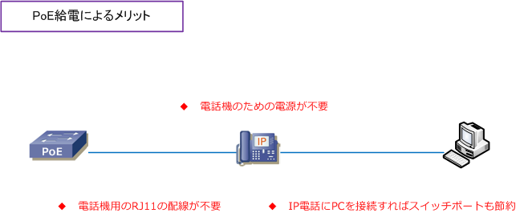

PoE / PoE+ / PoE++
PoEとは
PoE（Power over Ethernet）とは、カテゴリ5以上のUTPケーブル上で電力を供給する技術のことです。 電力供給が困難な場所に設置された無線LANアクセスポイント、IP電話、Webカメラなどへの電源供給で よく使用される技術です。例えば、IP電話へのPoEの給電によって、下図の3つのメリットが生まれます。

| PoEコンポーネント | 説明 |
|---|---|
| PSE（Power Sourcing Equipment） | 給電デバイス。PoEスイッチ、パワーインジェクタ |
| PD（Powered Device） | 受電デバイス。IP電話、無線アクセスポイント |
| イーサネットLANケーブル | クラス1～3（カテゴリ5以上）、クラス4以上（カテゴリ5e以上）のLANケーブル |
PoE技術の標準化
| 規格 | 通称 | 策定時期 | 最大供給電力 | クラス |
|---|---|---|---|---|
| IEEE 802.3af | PoE | 2003年 | 15.4W | 1～3 |
| IEEE 802.3at | PoE+ | 2009年 | 30W | 4 |
| IEEE 802.3bt | PoE++ | 2018年 | 最大90W（Type 4） | 5～8 |
PoE規格
PoEの給電仕様は以下であり、例えばクラス3のIP電話機に電源供給したい場合には、1ポートで15.4Wの 電力供給が可能なPoEスイッチを選定する必要があります。また、IEEE802.11ac対応の無線APの場合には、 1ポートで30.0Wの電力供給が可能なPoEスイッチを選定する必要があります。このように、PoEスイッチ を選定する場合には、受電デバイスがどのくらいの電力が必要となるのかを事前に確認する必要があります。
PoE給電仕様
| クラス | 給電機器（PSE）の電力 | 規格 | 通称 | |
|---|---|---|---|---|
| 0 | 15.4W | IEEE802.3af | デフォルト | PoE |
| 1 | 4.0W | IEEE802.3af | タイプ1 | PoE |
| 2 | 7.0W | IEEE802.3af | タイプ1 | PoE |
| 3 | 15.4W | IEEE802.3af | タイプ1 | PoE |
| 4 | 30.0W | IEEE802.3at | タイプ2 | PoE+ |
| 5 | 45.0W | IEEE802.3bt | タイプ3 | PoE++ |
| 6 | 60.0W | IEEE802.3bt | タイプ3 | PoE++ |
| 7 | 75.0W | IEEE802.3bt | タイプ4 | PoE++ |
| 8 | 90W-99W | IEEE802.3bt | タイプ4 | PoE++ |
IEEE802.3af、802.3at、802.3btの規格では、PoEスイッチは受電デバイスかどうかをUTPケーブル上で 電圧の供給や抵抗の測定によって判断します。受電デバイスは電力クラスの情報をPoEスイッチに提供して この情報に基づいてPoEスイッチは、受電デバイスに対して適切な電力を割り当てられるようになります。
PoEの動作 - PoEポリシング：IEEE 802.3af power classification override features
PoEポリシングでは、障害が発生しているインライン受電デバイスからCatalystスイッチを保護します。 障害が発生している受電デバイスは設計上より多くの電流を引き込む時があります。
受電デバイスがスイッチポートに接続されると、ラインカードは接続された受電デバイスのタイプを検出し 適切な電力量を割り当てます。そして、PoEポリシングのしきい値を割り当てられた電力より5%多い値に 設定します。受電デバイスが、Catalystのポリシングしきい値で指定されているもより多くの電力を1秒を 越えて消費すると、ポートはシャットダウンしてエラーディセーブル（Errdisable）になります。または、 設定したPoEポリシング アクションに応じ、メッセージがコンソールに保存されてポートが再起動します。
PoEの設定 - Catalystスイッチ
PoE対応のCatalystでは、デフォルトで電力供給が出来る状態になっていることから、PoEスイッチのための 設定は特に必要ありません。また、PoEスイッチではポートごとに電力供給の有効化と無効化を設定できます。 PoEスイッチは、ポートに接続したデバイスが電力を必要としているかどうかを判断して、電力供給が必要な 場合だけ電力供給を行うことから、電力供給が必要ないPCなどがPoEスイッチに問題なく接続することが可能。
PoEの設定
(config)# interface interface-id (config-if)# power inline auto [ max milli-watts ] | never | static [ max milli-watts ]
| コマンド引数 | 説明 |
|---|---|
| auto | ポートが受電装置を自動検出して電力供給するようにするための設定。デフォルト値。 (config-if)# power inline auto ← デフォルトの設定であるためコンフィグ上は非表示。 |
| max | オプション値。最大ワット数を指定。 |
| never | 受電デバイスの検出や電力供給を無効化する設定。この設定をするとただのポートとなる。 (config-if)# power inline never |
| static | インターフェースを auto より高いプライオリティに設定。 |
提供可能な電力量、現在の使用率、ポートごとの電力消費状況などは show power inline で確認できます。